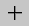

链接的外部对话框
|
“链接的外部”对话框选项 |
|||
|---|---|---|---|
|
选择步骤 |
|||
|
候选体 |
用于选择将用于抽取外壳的体。 |
||
|
外部面 |
用于标识外部面。可以使用自动选择方式(隐藏线或射线)中的一种，或者手工选择或取消选择候选体中的面。 |
||
|
隐藏线方向 |
如果使用隐藏线自动选择方式，则此选项允许指定隐藏线方向(当下面可变窗口中的视图设置为指定的方向时使用)。 |
||
|
 射线原点 |
如果使用射线自动选择方式，则此选项允许指定射线原点(当下方可变窗口中的射线设置为指定的原点时使用)。 |
||
上方的可变窗口 |
|||
矢量方法 |
仅当隐藏线方向选择步骤处于活动状态，并且视图（位于下方的可变窗口中）设置为指定的方向时显示。 可通过指定用于确定方向的矢量的定义方式，来帮助您定义隐藏线的方向。 |
||
选择使用菜单 |
|||
|
选择使用 |
用于指定选择面的自动方式。然后可以手工选择其他面，或取消选择已选择的面。
|
||
下方的可变窗口 |
|||
全选 |
当候选体选择步骤处于活动状态时显示。 从即将抽取面的模型中选择所有体（根据在链接的外部对话框中选择的其他选项）。 |
||
弦公差 |
当外部面选择步骤处于活动状态时显示。 用于指定弦公差。 |
||
分辨率 |
当外部面选择步骤处于活动状态，并且选择使用设置为隐藏线时显示。 用于指定结果片体的分辨率，即在粗糙和很精细之间。 |
||
视图 |
当外部面选择步骤处于活动状态，并且选择使用设置为隐藏线时显示。 用于指定视图。 |
||
射线 |
当外部面选择步骤处于活动状态，并且选择使用设置为射线时显示。 用于指定射线原点的定义方式。 |
||
选择面 |
当外部面选择步骤处于活动状态时显示。 用于执行隐藏线或射线的自动选择。 |
||
全部（选定的除外） |
当外部面选择步骤处于活动状态时显示。 执行反向选择，使当前选中的面变为未选中状态，未选中的面变为选中状态。如果希望选择除少数几个面之外的所有面，这非常有用。 |
||
其他选项 |
|||
|
组 |
您可以将按照如下任意方式创建的体分组：
|
||
质量属性 |
计算每次更新时所有原始实体的累积质量属性，并保存结果。使用候选体中所有的实体，并忽略所有片体。 质量属性总是在所有特征后才计算，而与按时间戳记设置无关。 质量属性在信息→特征报告中显示。 |
||
删除孔 |
通过从产生的片体移除内部边环来删除孔。仅在具有单个曲面的片体可填充孔时，才可移除内部环。 |
||
按时间戳记 |
按当前时间戳记创建 LINKED_EXTERIOR 特征。 如果没有选中按时间戳记复选框，则在所有现有特征之后创建该特征。 |
||
隐藏原先的 |
创建特征后，隐藏原先的候选体。 |
||
|
创建非关联项 |
如果选中该复选框，则创建的特征为非参数化。
|
||
应用时确认 |
如果在准备创建特征时单击应用而不是确定，则可以预览显示的结果。 使用应用时确认对话框可执行以下任何操作：
关于截面分析的更多信息，请参见 外观造型设计帮助；关于其他分析选项的更多信息，请参见 NX 分析帮助。 |
||